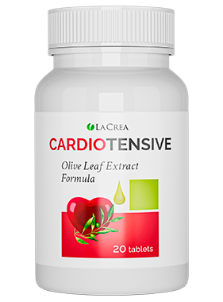

Cardiotensive Învinge hipertensiunea arterială și toate simptomele ei
Descoperă cum acționează această formulă naturală în 3 etape pentru stabilizarea presiunii arteriale la parametrii fiziologici, curățarea vaselor de sânge și susținerea ritmului cardiac după vârsta de 35–40 de ani.
- Normalizează presiunea arterială în mod natural și treptat
- Restabilește elasticitatea vasculară și tonusul pereților arteriali
- Scade nivelul colesterolului din sânge și îmbunătățește circulația
- Protejează împotriva suprasolicitării inimii și a accidentelor vasculare

Afecțiunile cardiovasculare reprezintă principala cauză a complicațiilor grave la nivel mondial. Conform datelor statistice internaționale, peste 40% din totalul cazurilor critice sunt asociate cu problemele sistemului circulator, iar 85% dintre acestea sunt legate direct de suprasolicitarea mușchiului cardiac și a vaselor cerebrale.
Hipertensiunea arterială este o amenințare serioasă pentru viață și sănătate!
Atunci când tensiunea arterială rămâne ridicată sau oscilează constant fără un suport adecvat, pereții vaselor de sânge își pierd flexibilitatea. Efectele hipertensiunii arteriale netratate la timp pot duce la:
Factori de risc care declanșează hipertensiunea arterială
Dacă ai depășit vârsta de 35–40 de ani și te regăsești în cel puțin două dintre situațiile de mai jos, vasele tale de sânge au nevoie de protecție activă:
Vârsta (35-40+)
Odată cu înaintarea în vârstă, arterele devin mai rigide și mai sensibile la depunerile de lipide.
Ereditate
Predispoziția genetică în familie crește semnificativ riscul apariției oscilațiilor de tensiune.
Stres Cronic
Excesul de adrenalină și cortizol provoacă spasme vasculare și creșteri bruște ale pulsului.
Obiceiuri Proaste
Fumatul și consumul de toxine îngustează lumenul arterial și reduc oxigenarea țesuturilor.
Alimentație Slabă
Excesul de sare și grăsimi saturate favorizează retenția de apă și depunerea colesterolului.
Inactivitatea Fizică
Sedentarismul încetinește circulația periferică și slăbește tonusul mușchiului cardiac.
Excesul de Greutate
Fiecare kilogram în plus obligă inima să pompeze sângele cu o presiune suplimentară.
Somnul Neregulat
Lipsa odihnei profunde împiedică regenerarea nocturnă a sistemului nervos și vascular.
3 Etape de Acțiune Cardiotensive
Spre deosebire de produsele sintetice care scad brusc tensiunea pentru câteva ore, formula naturală Cardiotensive acționează sistematic în trei faze complementare:
Recuperarea
Stabilizează tensiunea arterială la parametrii fiziologici individuali, calmând spasmele vasculare și eliminând senzația de presiune în zona cefei și a tâmplelor.
Normalizarea
Restabilește ritmul cardiac normal, optimizează compoziția și vâscozitatea sângelui și ajută la reducerea hipertrofiei inimii și a pereților vaselor sanguine.
Protecția
Previne modificările aterosclerotice ale vaselor sanguine ale inimii, dizolvă depunerile de colesterol și protejează pe termen lung împotriva crizelor vasculare.
Ce veți obține după cursul de administrare Cardiotensive?
Datorită extractelor botanice cardioprotectoare și antioxidanților naturali, parcurgerea cursului complet oferă 5 beneficii esențiale pentru întregul organism:
Tensiune Normală
Vase Sănătoase
Somn Strâns și Odihnitor
Imunitate Puternică
Creșterea Rezistenței
Compoziția naturală a comprimatelor Cardiotensive reunește fitonutrienți activi (precum extracte din fructe de păducel, usturoi deodorizat, frunze de măslin, rădăcină de valeriană și complexul de vitamine B) care acționează în sinergie pentru a curăța arterele de plăcile de colesterol, a calma sistemul nervos și a menține elasticitatea endoteliului vascular.
| Denumire Produs | Cardiotensive |
|---|---|
| Formă de Prezentare | Flacon cu comprimate / capsule naturale |
| Grup Țintă Recomandat | Bărbați și femei cu vârsta de peste 35–40 de ani |
| Preț Promoțional România | 159 RON (Reducere 50% de la 318 RON) |
| Livrare și Plată | Livrare prin curier în toată România (fără restricții), plata ramburs la primirea coletului |
| Program Suport Telefonic | Zilnic între orele 08:30 – 21:30 (ora locală a României) |
Modalitatea de Utilizare Cardiotensive
Respectarea schemei zilnice de administrare este simplă și asigură o absorbție optimă a principiilor active:
Dimineața
1 comprimat dimineața
Seara
1 comprimat seara
Hidratare
Împreună cu un pahar mare cu apă
Păreri și Comentarii ale Clienților din România
Descoperă experiențele persoanelor care au comandat Cardiotensive și au urmat cursul recomandat:
„După vârsta de 45 de ani am început să am fluctuații mari de tensiune și dureri de cap în fiecare seară din cauza stresului. Cu Cardiotensive, administrat câte un comprimat dimineața și unul seara, valorile mele s-au stabilizat în jurul a 130/80 și dorm mult mai liniștit.”
„Am comandat de pe site-ul oficial la prețul redus de 159 RON. Operatorul m-a sunat foarte politicos pentru confirmare, iar coletul a ajuns în 3 zile la Brașov. Am plătit direct la curier. Mă simt mult mai energică și nu mai am țiuit în urechi.”
„La schimbările de vreme aveam mereu amețeli și palpitații. Mi-a plăcut că acest produs are o compoziție naturală care nu irită stomacul. După două săptămâni de curs mă simt revigorat și tensiunea nu mai sare brusc.”
Cum Lucrăm: Comandă Cardiotensive Original în 3 Pași Simpli
Fără plăți în avans și fără riscuri. Livrarea este disponibilă în toate județele din România:
Pasul 1: Cererea Online
Lăsați o cerere pe site-ul oficial completând numele și numărul dumneavoastră de telefon.
Pasul 2: Confirmarea (08:30–21:30)
Operatorul vă va contacta telefonic (în intervalul 08:30 – 21:30) pentru a vă oferi detalii și a confirma adresa de livrare.
Pasul 3: Plata la Primire
Achitarea sumei de 159 RON se face în numerar exclusiv la primirea mărfii de la curier.
Întrebări Frecvente despre Cardiotensive (FAQ)
Răspunsuri clare la cele mai frecvente întrebări ale cumpărătorilor din România:
Ce este Cardiotensive și pentru ce se utilizează?
Cardiotensive este un supliment alimentar natural sub formă de comprimate, destinat adulților de peste 35–40 de ani. Acesta ajută la normalizarea tensiunii arteriale, curățarea vaselor de sânge de depozitele de colesterol și susținerea funcției cardiace normale.
Care este prețul oficial Cardiotensive în România?
Prețul promoțional este de 159 RON (redus cu 50% de la prețul întreg de 318 RON) atunci când plasați comanda prin intermediul formularului oficial al producătorului.
Cum se administrează comprimatele Cardiotensive?
Se recomandă administrarea a 1 comprimat dimineața și 1 comprimat seara, cu un pahar mare de apă. Pentru rezultate de durată, este indicată finalizarea cursului complet.
Se găsește Cardiotensive în farmacii (Catena, Dr. Max, Farmacia Tei)?
Nu. Producătorul distribuie Cardiotensive direct către consumatori prin pagina oficială pentru a evita adaosurile comerciale de intermediere și riscul produselor contrafăcute.
Există restricții de livrare în România și când mă sună operatorul?
Nu există restricții de livrare — coletele sunt expediate în toate localitățile din România. Centrul de apeluri funcționează zilnic între orele 08:30 și 21:30 (ora României).